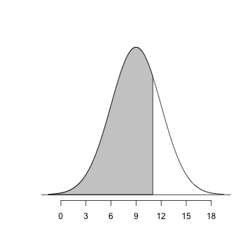
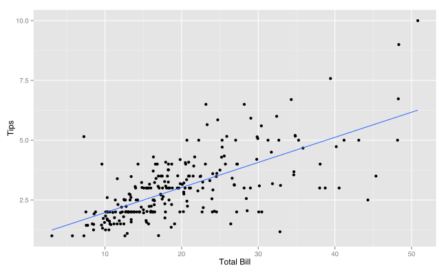

Test Bed
Features
Ramnath Vaidyanathan
Assistant Professor, McGill
Test Bed
Question 1
A normally distributed population has a mean of \(\mu = 100\) and a standard deviation of \(\sigma = 20\). Suppose we select a sample of size 4.
- What is the mean of the sampling distribution?
- What is the standard error of the sampling distribution?
- What is the probability that our selected sample has a mean greater than 110?
- 100
- 10
- The sampling distribution of the sample mean, for samples of size 4 will be normal with mean 100 and standard deviation \(\frac{20}{\sqrt{4}}\). Hence, the probability of selecting a sample with mean greater than 110 is given by \[ \begin{aligned} P(X > 110) & = P\left(Z > \frac{110 - 100}{\sqrt{4}}\right) \\ & = P\left(Z > 1\right) \end{aligned} \] Either using the standard normal table, or by using the 68-95-99.7 rule, we can compute this probability to be 0.1587
Correlation
Suppose the average number of Karma points per post is 13.8 and the standard deviation is 4.8. What proportion of students would have more than 20 points per post?
- 0.0982
- 0.9018
- 0.0491
- 0.1965
Correlation
Suppose the average number of Karma points per post is 13.8 and the standard deviation is 4.8. What proportion of students would have more than between 10 and 16 points per post?
- 0.0982
- 0.9018
- 0.0491
- 0.1965
Quartiles of Normal Distribution
The median of any normal distribution equals its mean.
- What is the area under the standard normal curve to the left of the first quartile?
- Use the value found in (1) to determine the first quartile for a standard normal distribution?
Q3
If the life of wild pheasants follows a normal distribution with a mean of 9 months and a variance of 9, what percent of the population will be less than 11 months of age?
- 34.13
- 74.86
- 84.13
- 62.93
We are looking for the area to the left of x = 11

Question 4
The distribution of lifetimes for a certain type of light bulb is normally distributed with a mean of 1000 hours and a standard deviation of 100 hours. Find the 33rd percentile of the distribution of lifetimes.
- 560
- 330
- 1044
- 1440
- none of these
We are interested in finding the 33rd percentile. Computing the z-score corresponding to p = 0.33, we get z = -0.4399. We can find the required percentile by "unstandardizing" the z-score . Hence, we get x = 1000 + 100 * -0.4399, which gives us x = 956.0087.
Question 5

Are the heights of each bar a relative frequency?
- Yes
- No
- This is hint 1.
- This is hint 2.
Heights
The distribution of heights of a population of adults is approximately normal with mean 66 inches and SD 2.5 inches. [For those of you who are used to the metric system: one foot is 12 inches.]
- Approximately what percent of the adults are over 6 feet tall?
- Approximately what percent of the adults have heights that are within 1 inch of the average?
- Approximately what percent of the adults are 70 inches tall, to the nearest inch?
- Approximately what is the 90th percentile of the heights, in inches?
The percent of adults over 6 feet tall is given by
pnorm(6, mean = 66/12, sd = 2.5, lower.tail = F)## [1] 0.4207\(\alpha = \beta + \gamma\)
Normal Distribution

Guess the Correlation

Highway Signs
A Pennsylvania research firm conducted a study in which 30 drivers (of ages 18 to 82 years old) were sampled, and for each one, the maximum distance (in feet) at which he/she could read a newly designed sign was determined. The goal of this study was to explore the relationship between a driver's age and the maximum distance at which signs were legible, and then use the study's findings to improve safety for older drivers. (Reference: Utts and Heckard, Mind on Statistics (2002). Originally source: Data collected by Last Resource, Inc, Bellfonte, PA.)
| Age | Distance | |
|---|---|---|
| 1 | 18 | 510 |
| 2 | 20 | 590 |
| 3 | 22 | 560 |
| 4 | 23 | 510 |
| 5 | 23 | 460 |
| 6 | 25 | 490 |